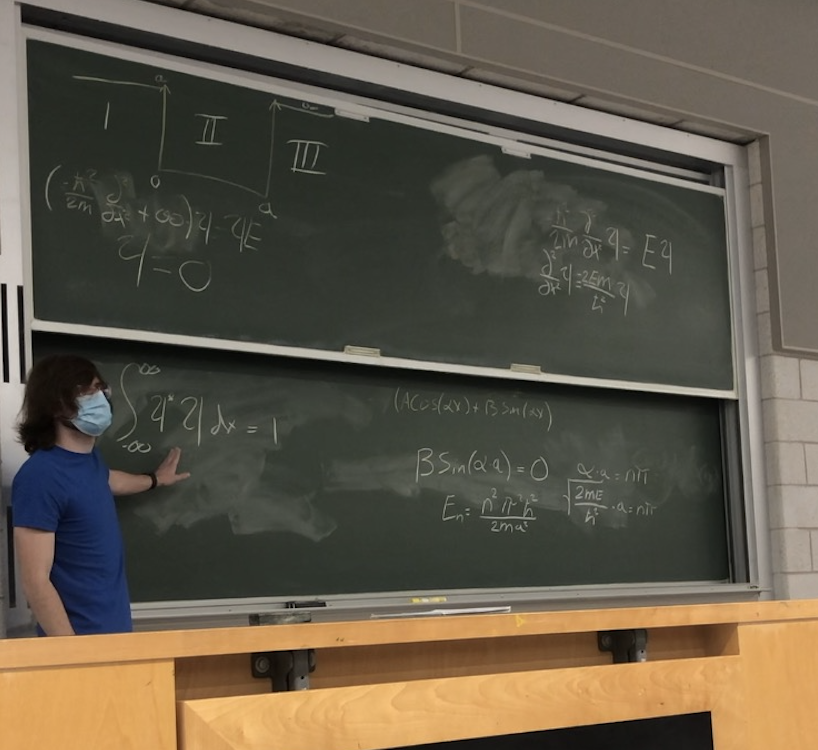

Research
Experimental quantum systems, diamond color centers, electrons on superfluid helium, and GaP-on-diamond nanophotonic design.
Quantum physics and photonics researcher, STEM educator, and learning designer at Michigan State University.
My work spans quantum systems, color centers in diamond, nanophotonics, scientific computing, and experimental engineering.
I am also interested in making difficult physics and mathematics intuitive through visualization, interaction, and conceptual reasoning.

Experimental quantum systems, diamond color centers, electrons on superfluid helium, and GaP-on-diamond nanophotonic design.

University teaching, one-on-one tutoring, interactive curriculum development, student mentoring, public outreach, and visual-first learning design.

Peer-reviewed and preprint research, first-author poster presentations, and oral presentations spanning diamond color centers, quantum information science, and electrons on helium.

A visual-first interactive physics learning project designed to build intuition before formal equation use. Students begin by making conceptual predictions from visual information, then can progressively reveal additional context, hints, mathematical representations, and equations before receiving immediate explanatory feedback.
Education, research, teaching, publications, presentations, honors, and professional experience.
Dual Ph.D. programs at MSU, an M.S. in Physics, and undergraduate degrees in Physics, Computer Science, and Astronomy–Physics with a Certificate in Mathematics.
Quantum systems, cryogenic instrumentation, diamond color centers, photonics, electromagnetic simulation, and scientific software.
Quantum mechanics teaching, STEM tutoring, CapyPhysics, Quantum Motor City, outreach, and mentoring.
NiV-center publications, first-author posters, and selected oral presentations.
Research presentation awards, undergraduate distinctions, and scholarships.
Browse the sections above for education, research, teaching, publications, presentations, honors, and projects.


Functional and creative CAD and 3D-printing projects, including organization tools, lab hardware, and hobby designs.

Experiments and progress logs from my sourdough baking journey.
Programming, artificial intelligence, fitness tracking, and other ongoing personal projects.
Machine-learning and artificial-intelligence projects from a computer-science and physics background.
Programming experiments, software projects, and other computational work.
Workout split, progress tracking, and personal records.
CAD design, functional prints, lab tools, and organization projects.
Feel free to reach out about quantum and photonics research, STEM teaching and learning design, scientific software, collaboration, or related opportunities.